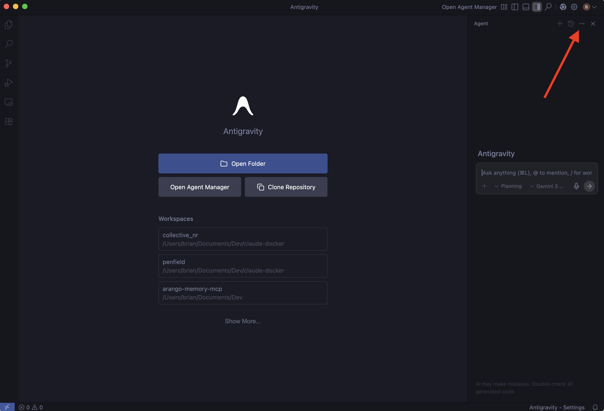
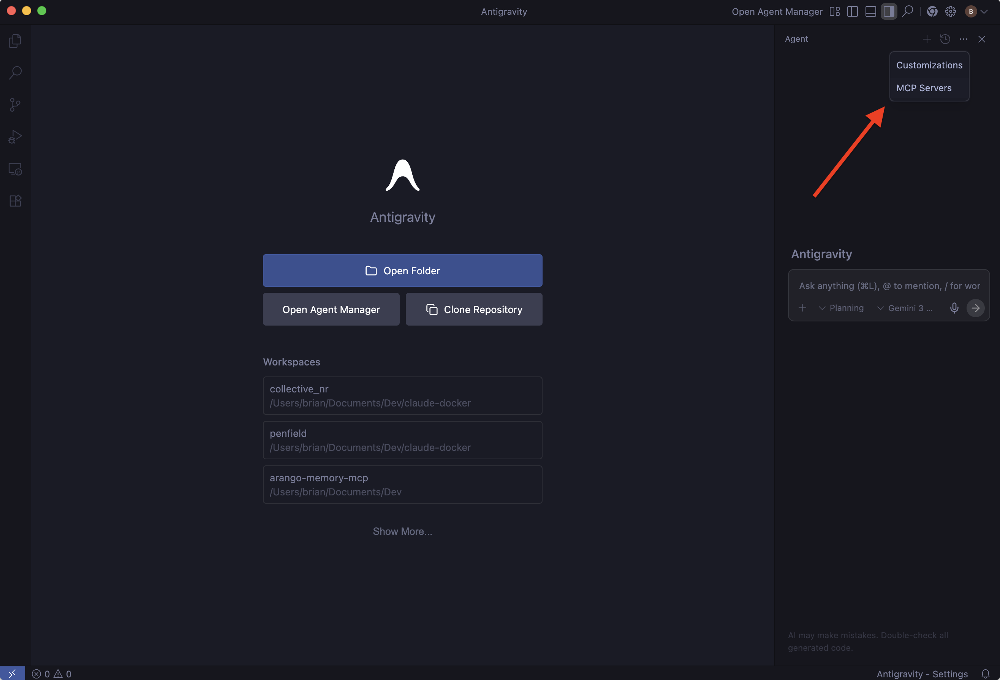
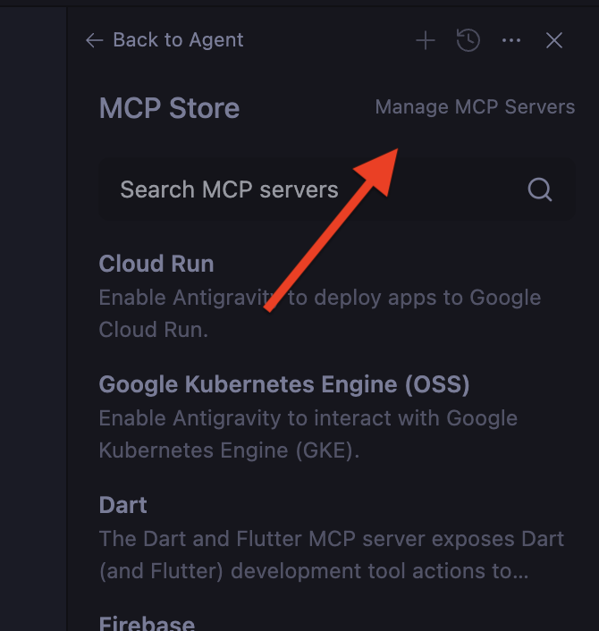
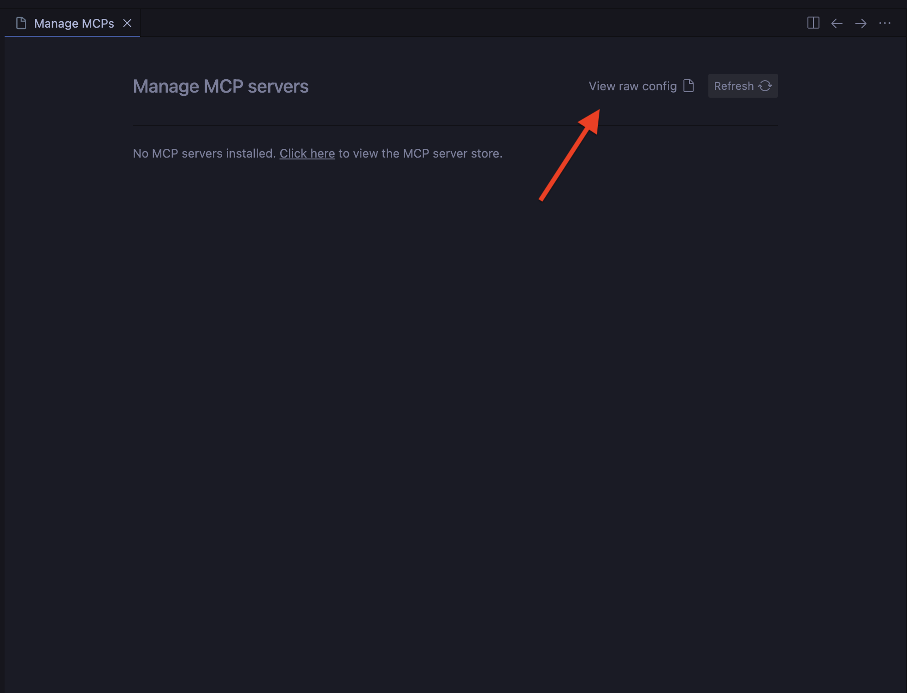

Antigravity Setup
Connect Penfield to Google Antigravity as a remote MCP server to enable persistent memory and personality features in your Antigravity sessions.
Antigravity connects to Penfield directly and signs you in through your browser. There is nothing to install.
Already connected through mcp-remote? Earlier versions of this guide used
mcp-remote. Replace that entry in your configuration with the one in Step 2, then sign in as described in Step 3.
Prerequisites
- A Penfield account (sign up here if you haven't already)
- Antigravity: the app, the IDE or the CLI. They share one MCP configuration, so you set Penfield up once
Step 1: Open the MCP Configuration
In the Antigravity IDE, go to the Agent panel on the right side of the screen and click the three-dot menu (⋯).

From the dropdown menu, click MCP Servers.

In the MCP Store panel, click Manage MCP Servers in the top right.

Click View raw config to open the configuration file.

This opens mcp_config.json. You can also open the file yourself: it is at ~/.gemini/config/mcp_config.json (on Windows, %USERPROFILE%\.gemini\config\mcp_config.json).
Step 2: Add Penfield
Add the Penfield entry and save the file:
Note: If you already have other MCP servers configured, add the
"penfield": { ... }block inside your existing"mcpServers"object. Don't create a second"mcpServers"key.
Using the Antigravity CLI? One command does Steps 1 and 2:
Step 3: Sign In
Penfield now appears in your list of MCP servers, marked as needing sign-in.
- Open the list of MCP servers and start the sign-in:
- App and IDE: go to Customizations > Installed > MCP Servers and click Authenticate next to penfield
- CLI: type
/mcp, select penfield, press Enter and choose Authenticate
- Antigravity shows a link. Open it in your browser.
- Sign in to your Penfield account if asked, then click Authorize.
- The browser shows an authorization code. Copy it, paste it into Antigravity and confirm.
Penfield is then listed as signed in, together with its tools. Antigravity registers itself with Penfield automatically. You do not need a client ID, a secret or an API key.
Step 4: Activate Your Assistant
Start a new conversation and type:
Penfield will load your personality configuration and respond with a personalized greeting. Start each new conversation this way.
When Antigravity asks for permission to use a Penfield tool, allow it. Choosing the "always allow" option is up to you, of course, but it lets your assistant use its memory seamlessly, without asking each time.
Support
If you encounter issues, contact support@penfield.app.